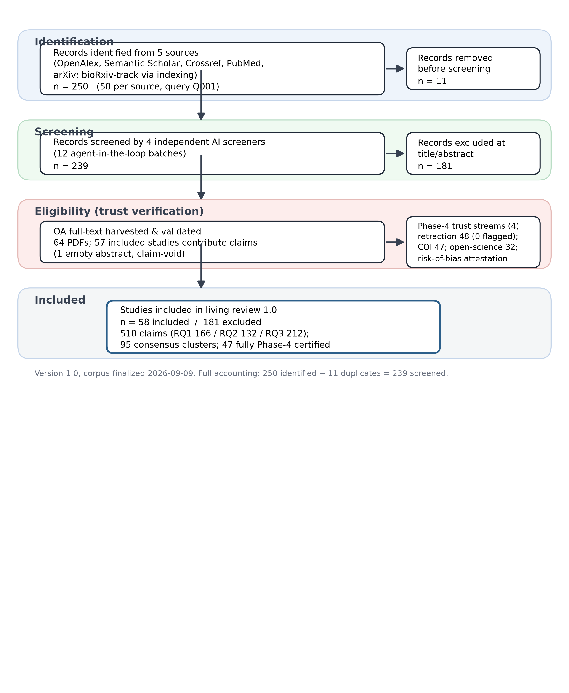
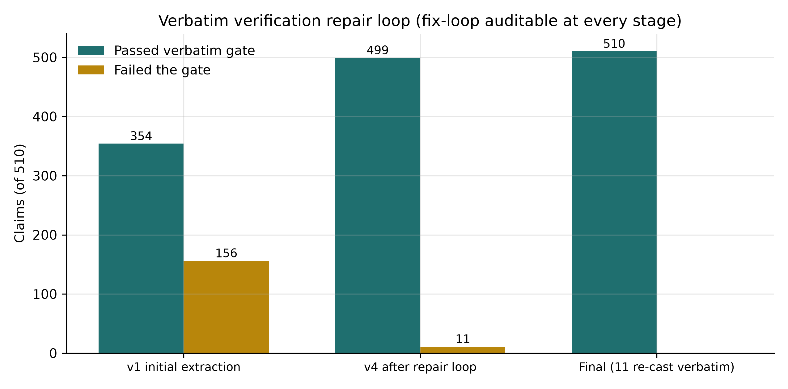
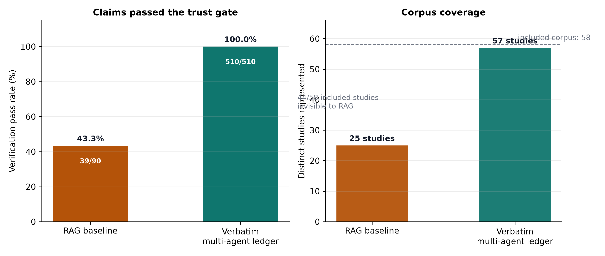
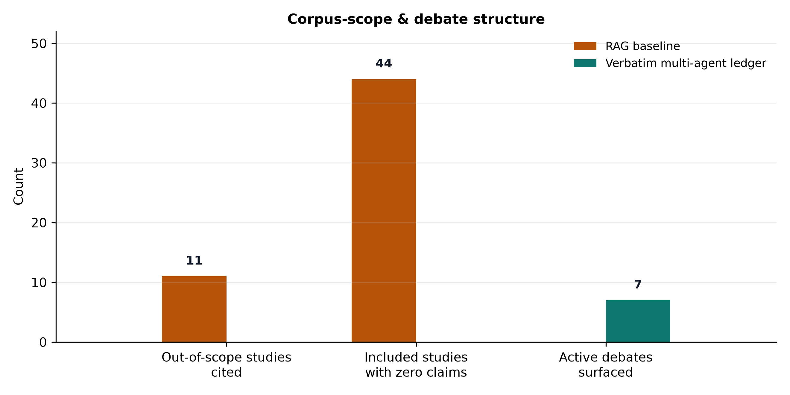
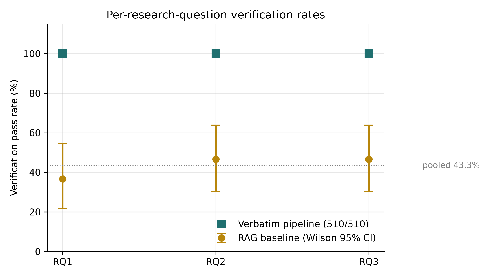

Protocol ID: PROTO-20260908-AI-RESEARCH-HARNESSES-TRUST
Type: Early-evidence living scoping review (protocol-based), reported in line with PRISMA-ScR
Manuscript status: Final version 1.0 for submission (post-adversarial audit; all review items resolved)
Review version: 1.0 (corpus finalized 2026-09-09; aggregates reported as-of this date)
Prepared by: The Nexus Scholar Research Pipeline (multi-agent orchestration; agent prompts versioned with the pipeline; all claims machine-verified verbatim against full text — see §3.5 and §7)
Corpus window: January 2023 – September 2026
Authors
Mouadh Bekhouche¹ and Soumia Zertal²
¹² University of Oum El Bouaghi, Algeria
*Contributed equally to this work.
² Corresponding author. Email: zertal.soumia@univ-oeb.dz
Background. Large language model (LLM) and agentic systems are being pressed into service across the systematic-review lifecycle — search, screening, extraction, and synthesis — yet the trustworthiness of their outputs (citation verifiability, provenance, reproducibility) is not established.
Methods. We conducted a protocol-driven early-evidence living scoping review across five scholarly sources (OpenAlex, Semantic Scholar, Crossref, PubMed, arXiv; January 2023–September 2026; bioRxiv-track content captured through these providers' indexing). The field is preprint-dominated and publication-lagging — 32/58 included records (55%) are preprint-track and 2026 alone accounts for 30/58 (52%) of the corpus — so the review is explicitly framed as a living review (Version 1.0, corpus finalized 2026-09-09; re-run protocol in §3.8). 239 deduplicated records were screened by four independent AI screeners (Fleiss' κ = 0.408) with majority voting and adjudicated deadlock resolution, yielding 58 included studies. The 58 included studies (47 fully Phase-4 certified) were subjected to a four-stream trust audit (retraction status, open-science artifact scan, conflict-of-interest audit, risk-of-bias attestation). Evidence was synthesized by two competing pipelines: a deterministic top-k retrieval-augmented generation (RAG) baseline (90 claims, 43.3% entailment-verified) and an authoritative multi-agent full-text claim-extraction pipeline (8 full-text agents + 1 abstract agent) whose 510 claims each passed ≥90% glyph-normalized coverage on char-window or token 6-gram verification (100% pass). Claims were clustered into a semantic consensus map.
Results. Architectures converge on auditable, provenance-bearing workflows: multi-agent role specialization, end-to-end orchestrated pipelines, retrieval- (RAG) and knowledge-graph-grounded designs, and prompt-compilation systems. Execution provenance is increasingly structured and append-only (deterministic IDs, immutable content-hashed run records, temperature-0 decoding, open-weights selection). Citation verifiability is the binding trust constraint: across 17,443 generated citations no model exceeded a 0.475 existence rate, while retrieval grounding reduced hallucinated papers to zero in OpenScholar-8B versus 78–98% for non-retrieval LLMs. Pooled LLM screening sensitivity/specificity reached 0.92/0.94 (I² = 95.8%), but temporal drift (−1.9%/day), run-to-run item-level discordance, and prompt fragility (up to 76-point accuracy swings) are not captured by standard reporting. The deterministic RAG pipeline cited 11 screened-out studies (corpus contamination) and verified only 43.3% of its claims; the multi-agent ledger reached 100% pass at the ≥0.90 coverage threshold across 57 included studies and surfaced a consensus structure (95 clusters: 16 high-consensus, 7 active debates, 37 unresolved, 35 provisional) invisible to RAG.
Conclusions. Full-text, verbatim-verifiable claim extraction is a tractable and superior synthesis primitive for trustworthy research infrastructure. We identify the field's open gap: no study provides an end-to-end, externally validated, multi-domain benchmark jointly evaluating screening, extraction, synthesis quality, citation verifiability, and cost.
Keywords: AI-assisted systematic review; agentic systems; retrieval-augmented generation; citation fact-checking; provenance; reproducibility; hallucination mitigation; evidence synthesis.
Conventional systematic reviews and scoping reviews are time-consuming, labor intensive, and susceptible to human bias [1]; conventional keyword search tools "lack the semantic understanding to answer nuanced questions" [2]. The rapid commoditization of LLMs has produced a wave of research harnesses claiming to automate review workflows end to end — from federated discovery and deduplication to TITLE/ABSTRACT screening, full-text extraction, risk-of-bias assessment, and statistical synthesis. Yet the same commoditization introduces new failure modes: fabricated citations, unreproducible runs, opaque closed-weight models, and retrieval pipelines that silently draw on evidence outside the approved corpus.
This review asks three questions. RQ1 — What is the state of the art in academic research and literature-review harnesses integrating LLMs and agentic AI (2023–2026), particularly their design mechanisms for execution provenance, audit trails, and process reproducibility? RQ2 — What evidence-trust and academic-integrity mechanisms (citation fact-checking, hallucination mitigation, retraction checks, risk-of-bias, open-science artifact verification) do they incorporate? RQ3 — How are they empirically evaluated, and what architectural gaps remain for the construction of novel, trustworthy research infrastructure?
Our contribution is methodological as much as substantive: the synthesis itself is generated and audited by the same class of systems under study. Every claim in this manuscript is backed by a machine-verified, glyph-normalized verbatim quote from the included full text (≥90% coverage on char-window or token 6-gram matching — see §3.5), and every pipeline step is recorded in an append-only audit journal.
Because the field is preprint-dominated and publication-lagging (55% of included records are preprint-track, and 2026 accounts for 52% of the corpus), we frame this as an early-evidence living scoping review: Version 1.0 reports the aggregate state of evidence as of corpus finalization (2026-09-09), and §3.8 specifies a re-run protocol for subsequent versions.
Prior evaluations have been narrow and siloed. Screening-performance meta-analyses report strong pooled sensitivity but extreme heterogeneity [3]. Citation-fabrication studies establish low existence ceilings but stop at measurement [4]. System papers demonstrate retrieval-grounded claim generation but evaluate on narrow benchmarks [5] (preprint version: [6]). Reviews of agentic scientific tools remain taxonomical [7], and reproducibility audits document run-to-run instability without remediating it [8]. Missing is a protocol-driven, corpus-scoped, verbatim-verified synthesis that simultaneously characterizes design, trust mechanisms, and evaluation maturity — the gap this review addresses. Our retrieval-augmented baseline further contributes a direct, quantitative comparison of deterministic RAG synthesis versus full-text multi-agent extraction over an identical corpus.
The review follows a hash-pinned protocol compiled with a protocol compiler (protocol.json, SCREENING_CRITERIA.md, intent.json) under the Design Science paradigm, and is reported in line with PRISMA-ScR and living-(systematic-)review guidance adapted to a scoping design. All stages were executed through a shared virtual Python environment; every step is recorded in an append-only audit journal (audit/journal.jsonl, 66 events). The corpus window (January 2023 – September 2026) is frozen for Version 1.0 at corpus finalization; §3.8 defines how the trailing publication-date boundary and subsequent evidence are absorbed in later versions.
Five sources were federated in a single pass (OpenAlex, Semantic Scholar, Crossref, PubMed, arXiv; bioRxiv-track preprints are captured via PubMed indexing) with concept-and-synonym search strings (Boolean OR within and across the concepts "literature-review automation" and "large language model"; see search_strategy in protocol.json and supplementary search-log) targeting LLM/agentic review automation, 2023–2026. 250 raw hits were deduplicated and hydrated (DOI and normalized-title resolution, abstract and DOI completion), yielding 239 unique verified records.
Two hundred thirty-nine records were screened against explicit PICO-style inclusion/exclusion criteria by four independent AI screeners in twelve agent-in-the-loop batches (Fleiss' κ = 0.408, fair agreement by Landis–Koch bands). Two hundred thirteen records were resolved by majority rule (≥3 of 4); the 26 two-vs-two deadlocks were adjudicated by a senior adjudicator. Final: 58 included / 181 excluded. Table 1 summarizes the full flow of information; screening reliability is decomposed in Table 2; the flow is rendered in Figure 1.
Table 1. Identification, screening, and inclusion flow (PRISMA-ScR item 17).
| Stage | Count | Source artifact |
|---|---|---|
| Records identified from 5 sources | 250 | raw_search.json (50 per source, query Q001) |
| Duplicates removed (DOI + normalized-title) | 11 | deduped.json |
| Records screened (title + abstract, 4 AI screeners) | 239 | 12 agent-in-the-loop batches |
| Excluded at title/abstract (systematic rule) | 181 | excluded.json |
| Included studies (review corpus) | 58 | included.json |
| OA full-text PDFs harvested and validated | 64 | pdfs/ (OA harvest) |
| Included studies contributing claims | 57 | claims.json (493 full-text + 17 abstract-only) |
| Fully Phase-4 certified studies | 47 | phase4/*.json |
Table 2. Title/abstract screening reliability.
| Metric | Value |
|---|---|
| Screeners | 4 independent AI screeners |
| Batches | 12 (agent-in-the-loop) |
| Fleiss' κ | 0.408 (fair, Landis–Koch) |
| Majority-rule resolutions | 213 (≥ 3 of 4) |
| Two-vs-two deadlocks escalated | 26 (senior adjudicator) |
| Final split | 58 included / 181 excluded |

Figure 1. PRISMA-ScR flow of information for the living scoping review (Version 1.0).Open-Access PDFs were retrieved and extracted to YAML-frontmatter Markdown (64 documents; 3,814 structural AST chunks; all-MiniLM-L6-v2 embeddings). Because extraction preceded final scoping, 18 extractions belong to screened-out studies; all synthesis in this manuscript is scoped strictly to the 58 included studies, and the screened-out extractions are removed from the evidence index for authoritative synthesis.
Each included study was certified with four scholar-verify streams: retraction/status (OpenAlex is_retracted, Crossref update-to), open-science DA/S/CA artifact scanning, conflict-of-interest audit, and risk-of-bias attestation. 47 of 58 included studies were fully checked (retraction stream covered 48; the remaining 11 lacked verifiable metadata/DOI records — see §5.3).
Approach B (authoritative). Eight parallel agents read the complete text of the 46 full-text included papers (7 size-balanced batches ≤ ~456 KB) plus one agent over the 12 abstract-only papers, producing claims in a canonical 10-field schema (principal fields: rq_id, claim_text, citation_tokens, evidence_quote, section, stance, evidence_level, location_hint, plus content-hash and provenance fields). Every quote was then machine-verified against the source file to a defined threshold: glyph-normalized (bullet remapping, zero-width-space and Unicode-dash handling, NFKC, hyphen-wrap rejoin) matching via character windows (8 chars, step 4) and token 6-grams (6 tokens, step 3); a claim passes at ≥ 0.90 coverage on either metric — i.e., the verified quote matches the source at ≥90% on char-window or token 6-gram alignment, not byte-for-byte. Initial verification failed 156/510 quotes; after four repair iterations including re-casting 11 light-paraphrase/math-glyph artifacts to exact substrings, 510/510 (100%) claims pass the ≥0.90 threshold, comprising 166 (RQ1), 132 (RQ2), 212 (RQ3) — 493 full-text and 17 abstract-only, spanning 57 studies (one included study has an empty abstract and contributes none).
Approach A (baseline). Deterministic RAG synthesis retrieved the top-30 chunks per research question from the full 64-document index and applied heuristic entailment verification of claims against their own snippets (90 claims, 30 per RQ). Table 3 summarizes the verbatim ledger; the verification repair loop is rendered in Figure 2.
Table 3. Multi-agent verbatim claim-extraction ledger (Approach B).
| Dimension | Value |
|---|---|
| Architecture | 8 full-text agents (46 full-text papers, 7 size-balanced batches) + 1 abstract agent (12 abstract-only papers) |
| Total claims | 510 (100% pass at the ≥ 0.90 glyph-normalized coverage threshold) |
| Per research question | RQ1 166 / RQ2 132 / RQ3 212 |
| Full-text vs. abstract-only | 493 / 17 |
| Studies contributing claims | 57 of 58 (SCI-000147 empty abstract, claim-void) |
| Initial verification failures | 156 / 510 |
| Repair iterations / re-cast | 4 iterations; 11 light-paraphrase/math-glyph quotes re-cast to exact substrings |

Figure 2. Verbatim verification repair loop (auditable at every stage).The 510-claim ledger was clustered with cached-embedding cosine similarity (all-MiniLM-L6-v2, threshold 0.40) into a consensus map (16 high-consensus, 7 active debates, 37 unresolved, 35 provisional clusters).
Results are reported per research question from the verification-gated ledger, with cluster references; direct quotes are drawn from claims.json (each gated at the ≥0.90 coverage threshold, §3.5). Aggregates (e.g., citation existence, pooled sensitivity) are reported as stated by the source studies and cross-checked between claims.
This Version 1.0 report is the initial snapshot of a living scoping review. The underlying pipeline (federated discovery → dedup/hydration → screening → verbatim-verified extraction → trust verification → synthesis) is re-runnable from committed inputs through the documented stage CLIs (see §7). Planned update policy:
literature/search_log_<version>.json).update-to / OpenAlex status), and the version table ships in the per-version supplement.The 58 included studies (2023: 2; 2024: 8; 2025: 18; 2026: 30) reflect rapid growth in agentic research tooling, with 2026 accounting for over half the corpus (30/58, 52%). Of the 46 full-text-characterized systems, keyword-classified architecture patterns are: single-agent/single-system 19 (41.3%); multi-agent/agentic orchestration 16 (34.8%); RAG/retrieval-grounded 5 (10.9%); end-to-end pipeline/meta-analysis 4 (8.7%); knowledge-graph/ontology 2 (4.3%). Phase-4 audit: 0 retractions, 16 live repository links (34.0%), 7 dual data+code releases, 5 industry COI ties (10.6%), 4 declared no-conflict, 1 academic-or-public affiliation, 37 with no formal COI statement. Table 4 summarizes corpus composition.
Table 4. Corpus composition (Version 1.0).
| Dimension | Value |
|---|---|
| Included studies | 58 (239 screened; 181 excluded) |
| Publication years | 2023: 2 · 2024: 8 · 2025: 18 · 2026: 30 |
| Preprint-track | 32/58 (55%) — 30 arXiv, 1 bioRxiv, 1 institutional repository |
| Architecture patterns (n = 46 full-text-characterized) | single-agent 19 (41.3%) · multi-agent 16 (34.8%) · RAG 5 (10.9%) · end-to-end 4 (8.7%) · graph/ontology 2 (4.3%) |
| Freshness | 2026 alone = 30/58 (52%); living-review rationale |
Architectural convergence. Systems press general-purpose LLMs into review pipelines without task-specific fine-tuning, treating prompt engineering as the primary optimization strategy [3][9]. Motivating framing recurs: conventional SLR practice is "time-consuming, labor-intensive, and susceptible to human bias" [1], and general-purpose agents "fall short on the auditable, scenario-specific workflows" biomedical evidence demands [7]. Five patterns recur: (i) prompt-compilation systems that package compiled prompts as "verifiable digital artefacts" to neutralize prompt fragility [9]; (ii) multi-agent teams with role specialization — Orchestrator/BioExpert/Evaluator decomposition [10], three-layer worker–manager–director networks [11], and 11-agent coordination with deliberate model routing (cheap models for throughput phases, strong models for judgment and verification) [12]; (iii) end-to-end orchestrated pipelines automating complete meta-analysis workflows [13][14][15]; (iv) RAG/retrieval-grounded designs coupling dynamic retrieval with answer generation [16][17][6]; and (v) graph/knowledge-grounded designs that productionize both a knowledge graph and vector collections as "structural infrastructure for verifiable information synthesis" [18][19].
Execution provenance. Provenance is increasingly structured, deterministic, and immutable: per-module token/runtime/inference logging [10], structured JSON API logs with model identity, latency, and retry counts [12], corpus-wide interaction logging [20], validated requests with unique identifiers guaranteeing idempotent behavior [21], stable record identifiers preserved end to end [8], and content-hashed "commitment cards" with run-bundles (event traces, checksums, retries) hosted in an immutable provenance record [22]. Reproducibility levers are dominated by fixed decoding (temperature 0 with frequency/penalty/presence penalties pinned [23]; temperature 0 with regex-constrained parsing and retries [24]; 2,880 runs producing 17,443 citations under deterministic settings [4]) and model openness — open-weights selection "explicitly to enhance the reproducibility of the results" [24], fully-local zero-API pipelines [25], and open-source positioning as an explicit fidelity alternative [26].
Debates. Open-source versus proprietary control: closed hosted models "cannot be guaranteed to reproduce original outputs because the underlying models and web interfaces are externally controlled and may change over time" [8][27]. Human-in-the-loop tension: dominant platforms position researcher orchestration with retained control and five mandatory human decision points [28][15], while deterministic workflows gain reproducibility but "restrict adaptive decision-making" [10].
Citation verifiability ceiling. Across 17,443 generated citations, no model exceeded an existence rate of 0.475; time-bound and combined conditions produced the steepest drops while outputs stayed format-compliant — "compliance without substance" [4]. A three-way Existing/Unresolved/Fabricated labeling pipeline audited against human labels achieved Cohen's κ = 0.63; manual validation (n = 100) gave 0.75 overall agreement, precision 0.97 (Existing) and 0.88 (Fabricated) but only 0.43 (Unresolved) — whose dominant error was Unresolved-to-Fabricated, making reported fabrication rates underestimates. Post-hoc multi-database verification was recommended [4].
Grounded mitigation works. OpenScholar, a retrieval-augmented scientific LM, returns passage-traceable answers [5]; OpenScholar-8B produced zero hallucinated cited papers versus baseline LLMs hallucinating 92.1% (CS) / 97.6% (Bio) of cited papers; non-retrieval LLMs fabricated 78–98% of citations, worse in biomedicine [6]. Knowledge-graph integration into public biological graphs reduced hallucinations [29]. Deterministic countermeasures include Crossref/Semantic-Scholar verification [4], conservative schema-constrained missingness ("NR") to avoid fabrication [25], agent-level anti-hallucination instructions with full traceability [10], and multi-agent validation loops (generator + auditing QA agent) [18][11].
Methodological integrity mechanisms. Risk-of-bias assessment is institutionalized: PROBAST+AI and QUADAS-2 application to LLM screening studies [3], ROBINS-I-based automated risk-of-bias with PRISMA 2020 flow diagrams and funnel-plot checks [13]. Reproducibility is advanced by open code, cost, and prompt releases [12] and open-weights selection [24].
Residual gaps. Field-level citation accuracy remains imperfect (DOI matching 74.4%, in-text citations 73.9%) [18]. Two nominally identical runs agreed on 91.7% of records but disagreed on 94 individual records, including 29 verified-eligible records retained by only one run — aggregate similarity conceals item-level instability [8]. Verification proxies fail as reliability guarantees: BERTScore returned near-identical F1 across workflows and rated false conclusions as semantically equivalent to correct ones [17]. LLM precision for post-exposure controls (0.15–0.30) is far below the best human reviewer (0.89) [30]. Data contamination is unquantified across benchmarks [24].
Screening performance. A meta-analysis of 18 studies reports pooled sensitivity 0.92 (95% CI 0.81–0.96), specificity 0.94 (0.90–0.97), SROC AUC 0.98, with substantial heterogeneity (I² = 95.8%); chain-of-thought improved sensitivity 0.86→0.95 (p < 0.01); full-text screening pooled sensitivity/specificity 0.99/0.99 [3]. Benchmark AUCs range 0.77–0.95 across heterogenous domains with inclusion rates from <1% to 12.4% [16]. Extraction performance. Structured field extraction strongly outperforms naive chunking: HySemRAG +35.1% semantic similarity (p < 0.000001, 643 observations) [18]; schema-constrained ketamine extraction achieved 100% recall / 97.9% precision / 98.9% F1 [25]. Extraction is domain-sensitive (clinical 82% accuracy best) with author-attribution errors (40% partial/failed) [23][31].
Cost and efficiency. Screeners run ~25× faster than human raters at $3.26 versus an estimated $492.18 for two human raters [32]; GPT-4o ≈ $3.16/100 articles, GPT-3.5 ≈ $0.22 [26]; a RAG pipeline synthesized 30 articles in 1m24s versus an estimated 50+ human hours [33]; full end-to-end pipeline costs are $19.51–$29.04 per review (median $22.65) [12].
Reliability failure modes. Temporal drift of −1.9%/day in HySemRAG's evaluation window [18]; identical questions answered identically only 69% of the time (8% substantively different) [23]; domain-transfer limits (LGAR reliably tested only in medicine due to sparse SYNERGY domains [24]); model ranking domain-dependence (e.g., one model 98% screening but 40% extraction in the same study) [34]; prompt fragility with up to 76 accuracy-point swings from format variations [9]; contamination acknowledgment and cross-model divergence [35][9]. Multi-agent orchestration is phase-dependent: it hurts screening but is essential for extraction, yielding 5.7× more poolable analyses [12].
The evaluation gap. No included study provides an end-to-end, externally validated, multi-domain benchmark jointly evaluating screening, extraction, synthesis quality, citation verifiability, and cost. Validations are proof-of-concept against published reviews without blinded dual review [25], formally labeled "essential" to reproduce [15], single-model without cross-model replication [24], and rely on LLM-as-judge protocols correlating only moderately with experts (r = 0.65–0.81) [23][36].
The 95-cluster consensus map (Table 5) surfaces structure the RAG baseline cannot see. High-consensus themes (≥ 3 independent sources): citation-verifiability failure at scale (0.475 existence ceiling), open-weights selection for reproducibility (17 studies), human-machine collaboration with retained researcher control, structured-field extraction superiority, and local-vs-API cost anatomy. Seven active debates include deterministic versus adaptive configuration, best-performing benchmark model, and LLM-versus-human screening reliability. Full cluster contents: see supplementary consensus file.
Table 5. Consensus cartography (synthesis/consensus.json, threshold 0.40).
| Bucket | Clusters | Meaning |
|---|---|---|
| High-consensus | 16 | ≥ 3 independent sources converge |
| Active debates | 7 | Contradictory claim sets |
| Unresolved | 37 | Mostly neutral-direction findings |
| Provisional | 35 | Single-source findings |
| Total | 95 | 510 claims clustered (all-MiniLM-L6-v2 cosine) |
The deterministic RAG baseline produced 90 claims across 25 studies (14 in-scope of 58), of which only 43.3% were entailment-verified (RQ1 36.7%, RQ2/RQ3 46.7%; Figure 5); it cited 11 studies absent from the included set (its index contained the 18 screened-out extractions; a single non-included paper, SCI-000184, supplied 22/90 claims), covered 44 included studies not at all (Figure 4), and yielded 20 clusters with zero debates. The multi-agent ledger achieved 100% pass at the ≥0.90 verification threshold across 57 included studies and 95 clusters including 7 active debates. Table 6 gives the head-to-head summary; Figures 3–4 visualize verification coverage and corpus-scope discipline.
Table 6. Approach A (deterministic RAG baseline) vs. Approach B (multi-agent verbatim ledger).
| Metric | Approach A (RAG) | Approach B (verbatim) |
|---|---|---|
| Claims generated | 90 (30 per RQ) | 510 |
| Verification gate | Entailment vs. own snippets | ≥ 0.90 glyph-normalized coverage (char-window / token 6-gram) |
| Pass rate | 43.3% (39/90) | 100% (510/510) |
| Studies represented | 25 | 57 |
| In-scope studies covered | 14/58 | 57/58 |
| Studies cited outside included set | 11 | 0 |
| Included studies invisible | 44 | 0 |
| Consensus clusters | 20 | 95 |
| Active debates surfaced | 0 | 7 |

Figure 3. Claim verification pass rate and corpus coverage, Approach A vs. B.
Figure 4. Corpus-scope and debate structure (lower is better for the first two panels; higher for debates).
Figure 5. Per-research-question verification rates with 95% CIs.Retraction: 0/48 flagged. Open science: 16 repository links, 7 dual data+code, 32 explicit DA/S/CA statements, 5 proprietary. COI: 5 industry ties (two Meta-affiliated, Google, Anthropic, OpenAI), 4 declared no-conflict, 1 academic-or-public, 37 with no formal COI statement (of 47 scanned) — a structural feature of computer-science preprints and evocative of governance gaps the corpus itself describes. Table 7 summarizes the four-stream audit.
Table 7. Phase-4 trust-verification streams (Version 1.0).
| Stream | Coverage | Finding |
|---|---|---|
| Retraction status (OpenAlex/Crossref) | 48 studies checked | 0 flagged; crossref_update_events empty (no supersession yet) |
| Open-science artifact scan (DA/S/CA) | 47 studies scanned | 16 repo links · 7 dual data+code · 32 explicit statements · 5 proprietary |
| Conflict-of-interest audit | 47 studies scanned | 5 industry-equipment ties · 4 declared no-conflict · 1 academic-or-public · 37 no formal statement |
| Risk-of-bias attestation | 47 studies assessed | PROBAST/QUADAS-2-adapted deterministic scoring |
Three findings carry design consequences. First, provenance engineering has matured into a concrete, implementable pattern language — structured logging, deterministic IDs, idempotency, content-hashed commitments, open-weights selection, temperature-0 decoding — that converts "traceability" from a desideratum into a verifiable mechanism, but adoption is uneven across the corpus. Second, citation verifiability is the binding trust constraint: over the corpus observed, the 0.475 existence ceiling across 17,443 citations and the discrepancy between retrieval-grounded (zero hallucinated papers) and ungrounded (78–98%) systems jointly imply that non-grounded claim generation is not defensible on current evidence in this corpus, and is a poor basis for scholarly infrastructure by our reading of the included records. Third, evaluation practice lags the systems it purports to assess: aggregate metrics (I² > 95%, domain-dependent AUC 0.77–0.95, item-level run instability, semantic-similarity-proxy failures, −1.9%/day drift) make single-number validation claims unusable for trust certification.
Written tools were excluded from the review matrix to avoid self-selection bias. Eleven included studies lack full text and contribute the 17 abstract-only claims (12th included study has an empty abstract and contributes none). 11 of 58 included studies could not be Phase-4 certified (absence of verifiable Crossref/OpenAlex records at corpus finalization for the retraction stream and partial metadata coverage for the other three streams; retraction stream covered 48) — the attestation statistics in §4.7 use the study-scanned denominators. The consensus clusterer uses a single embedding model and a hand-set threshold (0.40). Verification at ≥0.90 coverage guarantees that a quote matches its source at that threshold, not that the quote is byte-identical or that the source is representative of its own corpus. The corpus is preprint-track-heavy by design (55% preprint, 52% from 2026): this front-loads the newest evidence but makes aggregates provisional and version-bound — the living protocol (§3.8) absorbs published-version supersession and subsequent runs rather than restating finality. Screening agreement (κ = 0.408) is fair; screening decisions were consensus-aggregated and adjudicated.
The 2023–2026 literature documents a rapid, convergent movement toward auditable, provenance-bearing, retrieval- and agent-grounded research harnesses — and an equally rapid emergence of trust gaps (citation fabrication ≤ 0.475 existence, item-level run instability, semantic-proxy failures, absent benchmarks) that any credible infrastructure must address. Our method — protocol-driven scoping, four-stream trust verification, threshold-verified full-text claim extraction, and semantic consensus — demonstrates, within this corpus, that trustworthy agentic synthesis is achievable with currently available tooling. The open research gap is a joint, externally validated, multi-domain evaluation benchmark for the field.
workspaces/ai-research-harnesses-trust/ (protocol, screening, extractions, claims ledger, consensus, audit journal, phase-4 outputs) is preserved and git-tracked (text/metadata) as versioned, hash-pinned artifacts. Supplementary: search-log per version (literature/search_log_v1.0.json), standalone flow of information (synthesis/prisma_scr_flow.md + vector figure synthesis/figures/fig_prisma_scr_flow.svg and raster fig_prisma_scr_flow.png), and reference-provenance map with preprint→published supersession tracking (reports/supplementary_references.md).scholar-verify retraction/open-science/coi/risk-of-bias + verbatim-claims, scholar-rag index/consensus, discovery/screening entry points) are invocable in the project venv. Re-run instructions for the living-review protocol (§3.8): federated discovery and screening from literature/, extraction from extracted/, claim verification via the scholar-verify verbatim-claims gate (regeneration of the higher-level claim ledger uses the committed agent/prompt inputs recorded per run). Author-metadata resolution scripts for reference updates are committed under scripts/.protocol.json (compiled-protocol fingerprint sha256:9646d5ec6902c8f7687dfcb6568e473e1e01b78f666b20b74ec901f9703bf55c, recorded at last protocol recompile in the audit journal), SCREENING_CRITERIA.md, and intent.json. Not externally registered at Version 1.0; registration is planned for a recognized registry (OSF) before journal submission.update-to/OpenAlex status is available; at Version 1.0 finalization these fields were empty for the corpus (see §5.3), so the living protocol (§3.8) is the mechanism by which supersession will be absorbed.synthesis/claims.json (510 claims, each with verified evidence quotes) and synthesis/consensus.json; every pipeline step is recorded in audit/journal.jsonl (66 events). Version stamp: Review 1.0, corpus finalized 2026-09-09.[1] Islam MA. Designing a Human-AI Collaborative Modular Approach to Automating Systematic Literature Reviews: From Objectives to Reporting. Tampere University Institutional Repository. (2025).
[2] Paulraj NJ. Building an LLM Agent for Life Sciences Literature QA and Summarization. World Journal of Advanced Research and Reviews. (2025). doi: 10.30574/wjarr.2025.26.2.1665.
[3] Xie C, Kong W, Pi L, Qi D, Yang Y, Wang B, et al. Performance of Large Language Models in Automated Medical Literature Screening: A Systematic Review and Meta‐Analysis. Journal of Evidence-Based Medicine. (2026). doi: 10.1111/jebm.70166.
[4] Zhao C, Tang Y, Qian Y. Do Deployment Constraints Make LLMs Hallucinate Citations? An Empirical Study across Four Models and Five Prompting Regimes. arXiv. (2026). arXiv:2603.07287.
[5] Asai A, He J, Shao R, Shi W, Singh A, Chang JC, et al. Synthesizing scientific literature with retrieval-augmented language models. Nature. (2026). doi: 10.1038/s41586-025-10072-4.
[6] Asai A, He J, Shao R, Shi W, Singh A, Chang JC, et al. OpenScholar: Synthesizing Scientific Literature with Retrieval-augmented LMs. arXiv. (2024). doi: 10.48550/arxiv.2411.14199. (preprint version of ref [5]. doi: 10.1038/s41586-025-10072-4)
[7] Kinas R, Krawczyk J, Powalski R, Pietrzak P, Kowalewska A, Kolmus K, et al. BioResearcher: Scenario-Guided Multi-Agent for Translational Medicine. arXiv. (2026). arXiv:2605.05985.
[8] Figalová N, Huestegge L, Böckler-Raettig A. Evaluating human and LLM screening workflows in a conceptually complex scoping review: Recall--workload trade-offs and run-to-run consistency. arXiv. (2026). arXiv:2608.26885.
[9] Susnjak T. Compiling Prompts, Not Crafting Them: A Reproducible Workflow for AI-Assisted Evidence Synthesis. arXiv. (2025). arXiv:2509.00038.
[10] Wysocki O, Wysocka M, Jacobo M, Unsworth H, Freitas A. Biomedical reasoning in action: Multi-agent System for Auditable Biomedical Evidence Synthesis. arXiv. (2025). doi: 10.48550/arxiv.2510.05335.
[11] Wang Z, Wei CH, Chan J, Leaman R, Day CP, Wu C, et al. DeepER-Med: Advancing Deep Evidence-Based Research in Medicine Through Agentic AI. arXiv. (2026). arXiv:2604.15456.
[12] Huang YH, Lin YS. LUMEN: Cost-Transparent Multi-Agent Pipeline for Automated Systematic Review and Meta-Analysis. arXiv. (2026). arXiv:2606.28362.
[13] Taherinezhad M, Maier S, Vitagliano G, Pierri F, Feuerriegel S. AutoSynthesis: An agentic system for automated meta-analysis. arXiv. (2026). arXiv:2607.15247.
[14] Wang Z, Cao L, Danek B, Jin Q, Lu Z, Sun J. Accelerating clinical evidence synthesis with large language models. npj Digital Medicine. (2025). doi: 10.1038/s41746-025-01840-7.
[15] Lin HT, Yeh JT. meta-pipe: An LLM-agent pipeline for end-to-end automated systematic review and meta-analysis. arXiv. (2026). arXiv:2606.28363.
[16] Rouzrokh P, Khosravi B, Rouzrokh P, Shariatnia M. LatteReview: A Multi-Agent Framework for Systematic Review Automation Using Large Language Models. arXiv. (2025). doi: 10.48550/arxiv.2501.05468.
[17] Ha HH, Favre B, Portet F. MedMeta: A Benchmark for LLMs in Synthesizing Meta-Analysis Conclusion from Medical Studies. arXiv. (2026).
[18] Godinez A. HySemRAG: A Hybrid Semantic Retrieval-Augmented Generation Framework for Automated Literature Synthesis and Methodological Gap Analysis. arXiv. (2025). doi: 10.48550/arxiv.2508.05666.
[19] Rahgozar A, Mortezaagha P. AI Co-Scientist for Knowledge Synthesis in Medical Contexts: A Proof of Concept. arXiv. (2026). arXiv:2601.11825.
[20] Rahgozar A, Mortezaagha P, Edwards JD, Manuel DG, McGowen J, Zwarenstein M, et al. An AI-Driven Live Systematic Reviews in the Brain-Heart Interconnectome: Minimizing Research Waste and Advancing Evidence Synthesis. arXiv. (2025). doi: 10.48550/arxiv.2501.17181.
[21] Tongnamtiang S, Wongsim M, Satchawatee N. An AI-Assisted Research Automation System for Scholarly Paper Retrieval and Review With Workflow Orchestration. Journal of Computer Science. (2026). doi: 10.3844/jcssp.2026.2082.2091.
[22] Chen Z, Lu N, Li X, Ricard JA, Ju C, Wang HH, et al. Bringing analytic rigor to agentic AI for science: The Brain Researcher platform for neuroimaging data analysis. arXiv. (2026). arXiv:2608.19902.
[23] Schmidt L, Hair K, Graziosi S, Campbell F, Kapp C, Khanteymoori A, et al. Exploring the use of a Large Language Model for data extraction in systematic reviews: a rapid feasibility study. arXiv. (2024). arXiv:2405.14445.
[24] Jaumann C, Wiedholz A, Friedrich A. LGAR: Zero-Shot LLM-Guided Neural Ranking for Abstract Screening in Systematic Literature Reviews. Findings of the Association for Computational Linguistics: ACL 2025. (2025). doi: 10.18653/v1/2025.findings-acl.412.
[25] Serretti A. Benchmarking a Local Schema-Constrained Large Language Model Pipeline for Abstract Screening and Evidence Mapping. Cureus. (2026). doi: 10.7759/cureus.111193.
[26] Haryanto CY. LLAssist: Simple Tools for Automating Literature Review Using Large Language Models. arXiv. (2024). doi: 10.48550/arxiv.2407.13993.
[27] Robinson A, Thorne W, Wu BP, Pandor A, Essat M, Stevenson M, et al. Bio-SIEVE: Exploring Instruction Tuning Large Language Models for Systematic Review Automation. arXiv. (2023). doi: 10.48550/arxiv.2308.06610.
[28] Auer S, Oelen A, Jaradeh MY, Khalid M, Keya F, Gaddipati SK, et al. Towards AI-Supported Research: a Vision of the TIB AIssistant. arXiv. (2025). arXiv:2512.16447.
[29] Matsumoto N, Choi H, Freda PJ, Hernandez ME, Wang ZP, Moore JH. EcoXAI: Autonomous Agentic Ecosystem for Explainable Artificial Intelligence and Biomedical Discovery. bioRxiv. (2026). doi: 10.64898/2026.07.08.737358.
[30] Zhang W, Nguyen T, Stuart EA, Chen YT. Large language models for full-text methods assessment: a case study on mediation analysis. Journal of the American Medical Informatics Association. (2026). doi: 10.1093/jamia/ocag108.
[31] Shafqat W, Patterson M, Liss SN. Knowledge Synthesis Review Framework: Task-Level Benchmarking of LLM-Based Systems for Multi-Source Evidence Synthesis. arXiv. (2026). arXiv:2608.12741.
[32] Zrubka M, Alexy M, György KT, Zrubka Z. Large Language Models for Title/Abstract Screening in Systematic Literature Reviews: A Case Study in Precision Livestock Farming. 2025 IEEE 25th International Symposium on Computational Intelligence and Informatics (CINTI). (2025). doi: 10.1109/cinti67731.2025.11311831.
[33] Moţăţăianu A, Păvăloiu IB. Advanced Semantic Analysis of Research Papers Using a Retrieval-Augmented Architecture. Proceedings of the International Conference on Business Excellence. (2026). doi: 10.2478/picbe-2026-0107.
[34] Ferreira Barros C, Kalinowski M, Kassab M, Neto VVG. On the Use of a Large Language Model to Support the Conduction of a Systematic Mapping Study: A Brief Report from a Practitioner’s View. Proceedings of the 2026 IEEE/ACM International Workshop on Methodological Issues with Empirical Studies in Software Engineering. (2026). doi: 10.1145/3786149.3788298.
[35] Tang X, Duan X, Cai Z. Large Language Models for Automated Literature Review: An Evaluation of Reference Generation, Abstract Writing, and Review Composition. Proceedings of the 2025 Conference on Empirical Methods in Natural Language Processing. (2025). doi: 10.18653/v1/2025.emnlp-main.83.
[36] Wang X, Zhang Y, Xu B, Hou L, Li J. DeepWeaver: Bridging the Evidence Synthesis Gap in Open-Ended Question Answering. arXiv. (2026). doi: 10.48550/arxiv.2608.18988.